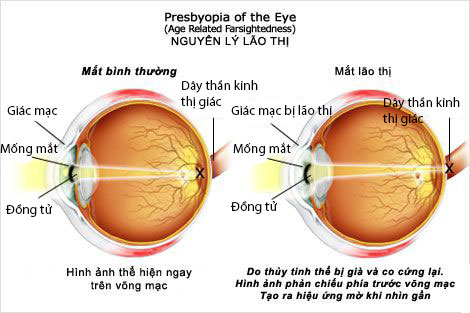

Lão thị và những điều cần biết
Lão thị là gì?
Lão thị là tật khúc xạ gây ra sự sụt giảm thị lực ở thị giác gần từ khoảng 40 tuổi. Lão
thị có tính sinh lý do tuổi già nhưng nhiều người vẫn xem lão thị là một vấn đề nghiêm
trọng vì lão thị thực sự có ảnh hưởng nhiều tới cuộc sống hằng ngày.
Nguyên nhân lão thị
Do ảnh hưởng tuổi tác, giảm sức điều tiết tại cơ thể mi, giảm sự đàn hồi thể thủy tinh,
củng mạc xơ cứng theo tuổi mất độ đàn hồi tạo kháng lực với thể mi.

Dấu hiệu lão thị
Thường bắt đầu khoảng 40 tuổi, nam nữ không khác biệt. Chủ yếu là không nhìn rõ cự ly gần
thường sử dụng, muốn nhìn rõ phải đưa ra xa. Chữ trong sách báo, điện thoại trở nên quá
nhỏ. Không thể xỏ kim được…
Đọc sách ở nơi ánh sáng yếu gặp khó khăn. Mỏi mắt, nhức mắt khi đọc sách, làm việc gần…
– Đeo kính gọng.
– Kính sát tròng, mềm – cứng điều trị lão thị.
– Phẫu thuật: đặt kính nội nhãn, NearvisionCK, PresbyLasik…
Tầm nhìn đôi, nhìn một vật có hai hoặc ba bóng mờ
– Khó khăn khi nhìn ở mọi khoảng cách.
Kính gọng lão thị
Là phương pháp phổ biến nhất giúp điều chỉnh lão thị.
Vì loạn thị thường xảy ra chậm trong thời gian dài, nên bệnh nhân thường bỏ qua các triệu
chứng của tật. Hay đến bệnh viện kiểm tra mắt ngay nếu người bệnh cảm thấy có bất kỳ sự
thay đổi thị lực nào. Nguyên tắc: độ kính lão thị điều chỉnh cần thiết cho mỗi bệnh nhân
được tính dựa trên biên độ điều tiết (cận điểm) và khoảng cách làm việc cần thiết của
bệnh nhân. Trong thực tế, qua kinh nghiệm chuyên viên khúc xạ phải dự tính độ kính điều
chỉnh lão thị phỏng chừng theo tuổi bệnh nhân, kết hợp độ khúc xạ nhìn xa sau khi khám
khúc xạ chủ quan.
Các loại kính lão thị
– Kính nguyên tròng: chỉ nhìn được gần thị trường nhìn rộng, rẻ tiền. Phải tháo kính khi
nhìn xa.
– Kính hai tròng: nhìn xa và gần không phải tháo kính, thị trường cho thị giác gần hẹp
hơn. Vì tròng kính có đường ranh giới ngang giữa tròng xa và gần nên ít thẩm mỹ. Có hiện
tượng nhảy ảnh khi nhìn xa sang gần, song thị khi nhìn qua nơi tiếp giáp giữa tròng xa
và tròng gần. Kính hai tròng hay đa tròng: dùng cho người năng động có yêu cầu thay đổi
nhìn xa gần liên tục
– Kính đa tròng: thẩm mỹ, không bị gián đoạn khi nhìn xa và gần, tránh được hiện tượng
nhảy ảnh, song thị, nhưng có thể bị méo ảnh ở vùng chu biên. Đắt tiền.
Kính áp tròng điều trị lão thị
Kính áp tròng cũng được khá nhiều người lựa chọn để điều trị lão thị. Kính áp tròng đa
tiêu với 2 loại: kính cứng thấm khí và kính mềm. Một loại khác của kính áp tròng điều
chỉnh lão thị là tình trạng đơn thị (monovision): một mắt đeo độ nhìn xa, mắt còn lại
đeo độ nhìn gần.
Phẫu thuật điều trị lão thị
Phẫu thuật đặt kính nội nhãn
Phẫu thuật Phaco lấy thủy tinh thể, đặt kính nội nhãn đa tiêu bệnh nhân có thể đạt thị
lực tốt ở mọi cự ly.
Phẫu thuật NearVision CK
Là phương pháp tạo hình giác mạc, chỉ thực hiện trên một mắt bệnh nhân nhằm điều chỉnh
thành tình trạng đơn thị (1 mắt nhìn xa, 1mắt nhìn gần). Nhiều nghiên cứu chỉ ra rằng
NearVisionCK điều trị lão thị hiệu quả nhưng sự điều chỉnh mang tính nhất thời và hiệu
quả giảm đi theo thời gian.
Phẫu thuật PresbyLASIK
Là phương pháp mới điều chỉnh lão thị đã được thử nghiệm lâm sàng tại Mỹ. Phương pháp này
dùng Laser Excimer tạo các vòng đa tiêu trực tiếp trên bề mặt giác mạc cho phép mắt có
thể nhìn rõ mọi cự ly.
Người thân của bạn có dấu hiệu lão thị hay chưa? Bạn đang đắn đo lựa chọn phương pháp nào
tối ưu nhất để điều chỉnh lão thị cho người thân của bạn? Hãy đưa người thân của bạn đến
khám mắt toàn diện, bạn sẽ được chuyên viên khúc xạ, bác sĩ khám tư vấn đầy đủ phương
pháp điều chỉnh lão thị phù hợp cho người thân của bạn nhé.
Bệnh viện mắt Sài Gòn
Tài liệu tham khảo: